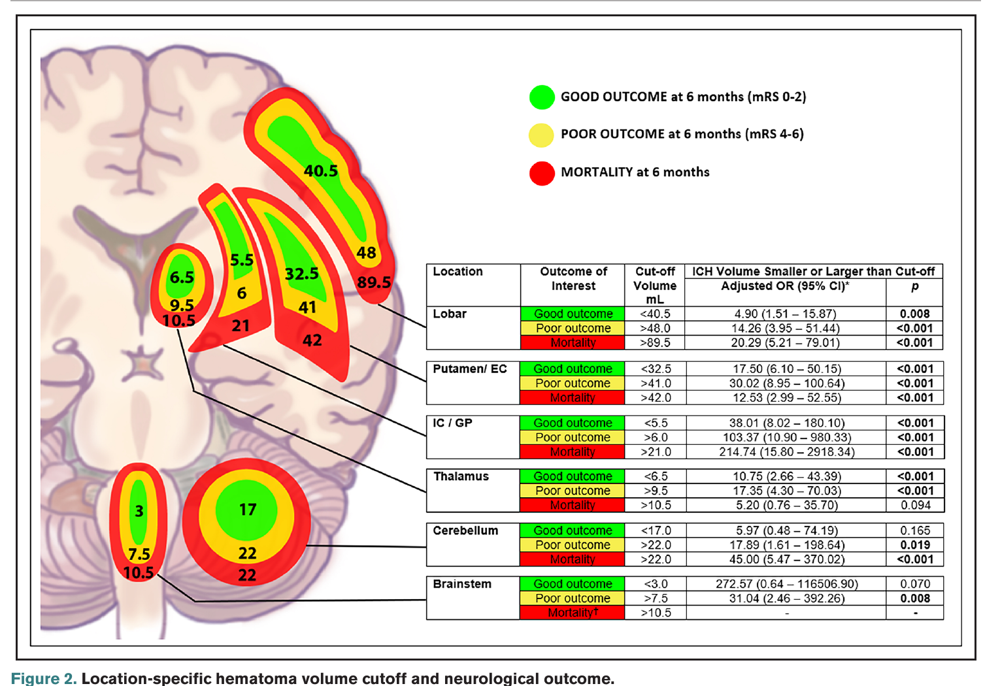

退院時M-FIM >61点となる予測確率
--%
Maugeri Model 1
入棟時の評価値から、Kobayashi、B-ADL、Maugeri Model 1、脳出血部位別カットオフによるmRSアウトカムを確認できます。
共通項目を1回入力すると、下の各指標がまとめて更新されます。
退院時M-FIM >61点となる予測確率を表示します。
Maugeri Model 1
出典: Scrutinio et al., Stroke 2017; Supplemental Table I。Model 1定数 -1.811。Maugeriはロジスティック回帰のため、内訳は各項目の係数×入力値を示します。
回復期リハ病棟入棟日の情報から、発症90日時点のM-FIM >61点を予測します。
B-ADLロジスティック推定
5.5点以上でM-FIM >61点を予測
出典: Fukuda et al., Journal of Stroke and Cerebrovascular Diseases 2025。カットオフ: 年齢70.5、日数37.5、Alb3.5、BRS上肢Ⅳ、BBS14.5、総FIM49.5。
ABC/2法で血腫量を計算し、6か月後mRSの部位別カットオフと照合します。
入力値はmm。計算時にcmへ換算し、A x B x 高さ ÷ 2でmLを算出。
出典: Teo et al., Stroke 2023 Table 4 / Figure 2。これは確率計算ではなく、部位別血腫量カットオフとの照合です。

入棟時m-FIMから標準gainを求め、年齢・認知FIM・発症から入棟までの日数の影響係数を掛けて退院時m-FIMを予測します。
出典: Kobayashi and Kobayashi, Frontiers in Neurology 2024; Figure 1。式: 退院時m-FIM予測値 = (入棟時m-FIM + 標準m-FIM gain) x 年齢係数 x 認知FIM係数 x 入棟時期係数。
Teo欄の血腫量判定を読むときの補助として、modified Rankin Scaleの生活イメージを確認できます。
| mRS | 生活の目安 |
|---|---|
| 0 | 症状なし。 |
| 1 | 症状はあるが、明らかな障害はない。通常の日常生活は可能。 |
| 2 | 軽度の障害。発症前の活動すべては困難でも、介助なしで身の回りのことは可能。 |
| 3 | 中等度の障害。何らかの介助を要するが、歩行は介助なしで可能。 |
| 4 | 中等度から重度の障害。歩行や身体的要求に介助を要する。 |
| 5 | 重度の障害。寝たきり、失禁、常時の看護・介護を要する。 |
| 6 | 死亡。 |
良好アウトカムはmRS 0-2、不良アウトカムはmRS 4-6です。スタッフ説明では、mRS 1-2を「症状があっても、日常生活は概ね自立から軽度障害の範囲」と伝えると共有しやすくなります。